Muslim Plus · sessão de 31/10/2026
O que foi feito nesta sessãoparidade P0 com o Muslim Pro 17.10.1
Você pediu para pesquisar o concorrente, criar uma task por sugestão, implementar todas as P0, rodar os E2E e deixar o app aberto para validar. Também pediu ajustes de uso no rastreador e a mensagem de divulgação. Este recap mostra pedido, entrega e prints de cada frente.
1.2.0 · versionCode 7181 testes JVM30 testes instrumentadosAAB assinado
Offline · sem conta · sem anúncios
0/0 vistos
Emulador dedicado MuslimPlusP0 · Pixel 6 · Android 14 · emulator-5556 · 12 GB de dados
App instalado 1.2.0 · hash do APK conferido · aberto na tela Hoje
Repositório commits 50e20d4, 9b08fa1, e7e4d32 · branch codex/quran-audio-storage
Clique em um card para marcar como visto.
Feito
Pesquisa do Muslim Pro 17.10.1
Pedido Instalar o Muslim Pro oficial, comparar as telas com o Plus e listar o que falta.
Entregue
Instalação oficial pela Play Store no Pixel 6, sessão como visitante.
Prints reais de onboarding, Home, Orações, setup/leitor do Alcorão, Learn e Progresso.
Relatório em docs/research/2026-10-31-muslim-pro-17.10.1.md e HTML em build/muslimpro/report/index.html.
Nenhum asset do concorrente foi versionado.
Feito
Spec e plano com uma task por sugestão
Pedido Criar uma task para cada sugestão e começar a implementar.
Entregue
Spec em docs/superpowers/specs/2026-10-31-p0-experience-parity.md.
Plano em docs/superpowers/plans/2026-10-31-p0-experience-parity.md com T1 a T6 e checkboxes.
Backlog atualizado em docs/superpowers/TODO.md.
Feito + ajuste seu
Hoje acionável, com os ajustes que você pediu
Pedido Transformar o Hoje em checklist das cinco orações. Depois você não entendeu como marcar e pediu para subir o verso do dia.
Entregue
Anel n/5, check por oração, marcar todas, faixa de sete dias e sequência.
A linha inteira marca e desmarca; o sino só liga/desliga o adhan. Dica quando o dia está em 0/5.
Verso do dia subiu para cima do rastreador; o rastreador ficou colado na lista.
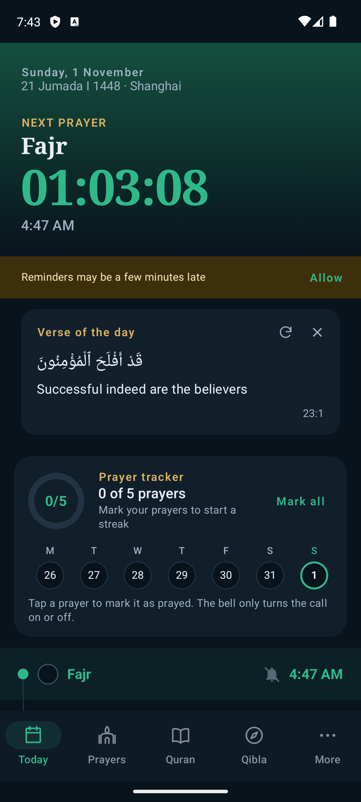
Ordem final: verso, rastreador, orações 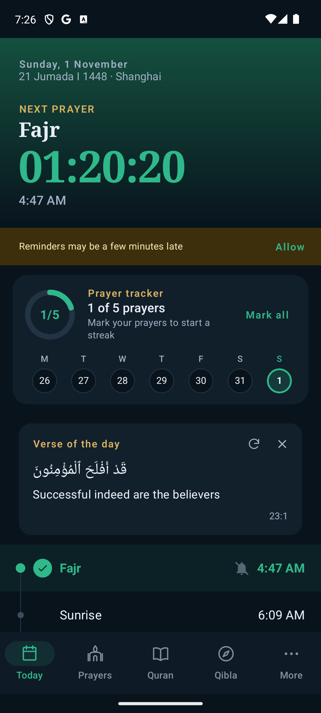
Toque na linha marcou o Fajr 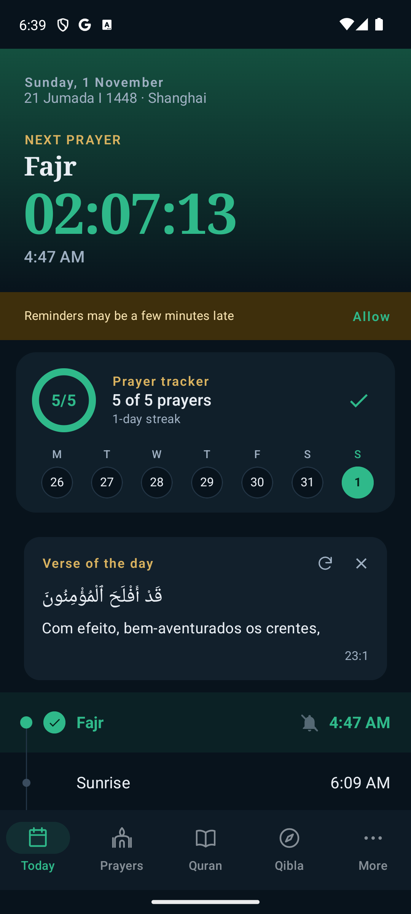
Marcar todas: 5/5 e sequência
Feito
Adhan por oração e lembrete antes
Pedido Silencioso por oração e lembrete antes do chamado, mantendo as nove vozes.
Entregue
Sino na linha do Hoje e switches na tela de Chamado usam a mesma preferência.
Lembrete silencioso de 5, 10, 15 ou 30 minutos, em alarme separado do adhan.
O adhan continua tocando no horário exato; o lembrete nunca toca áudio.
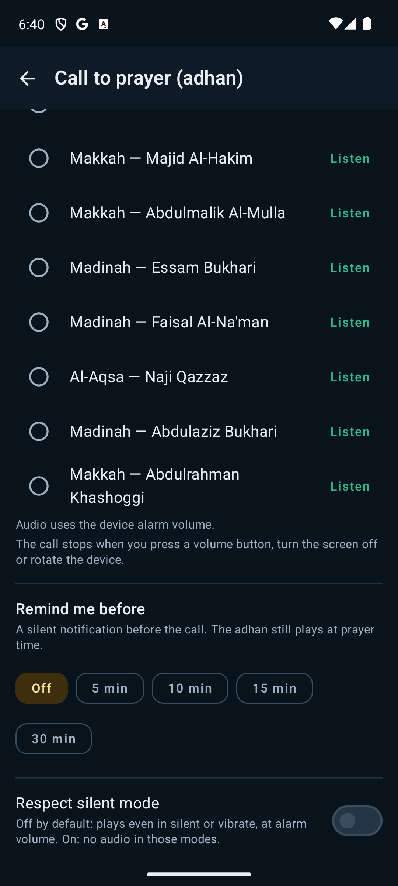
Lembrete antes, com 30 min quebrando linha
Feito
Setup do Alcorão em três passos
Pedido Ter o wizard de primeira entrada do Alcorão: escrita, tradução e meta.
Entregue
Passo 1 mostra Uthmani com prévia do texto; explica que IndoPak exige texto e fonte próprios.
Passo 2 escolhe tradução (só árabe, português ou inglês).
Passo 3 escolhe 5, 10, 15 ou 30 minutos e estima a conclusão.
Pular grava a conclusão e mantém os padrões.
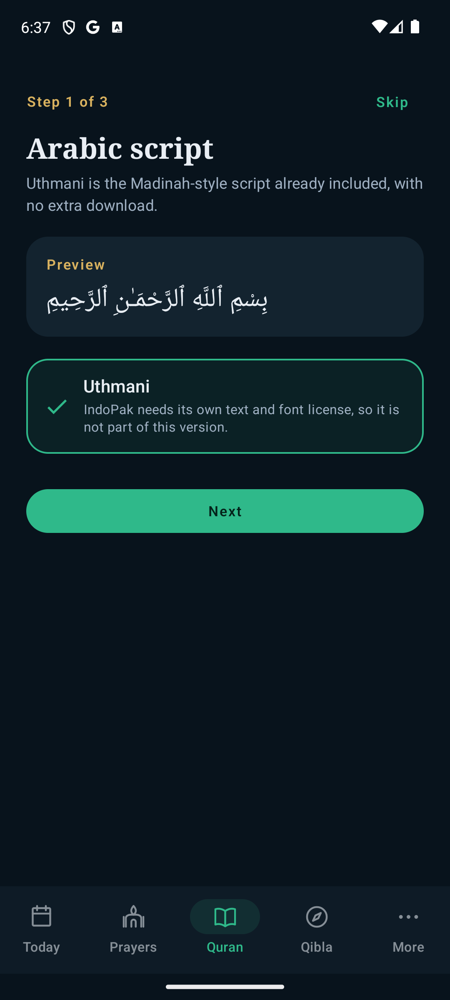
Passo 1: escrita 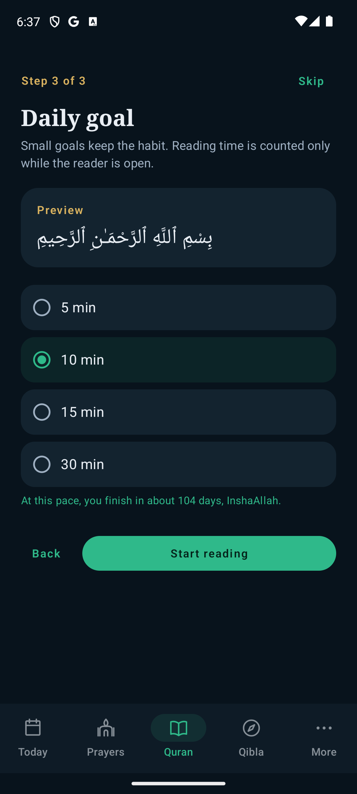
Passo 3: meta e estimativa
Feito
Abas Leitura e Progresso
Pedido Separar leitura de progresso, com meta e minutos lidos.
Entregue
Abas Leitura e Progresso na lista de suras.
Minutos lidos hoje contados só com o leitor aberto, sem serviço de fundo.
Meta, sequência, último ponto e total de marcadores; editar meta no próprio progresso.
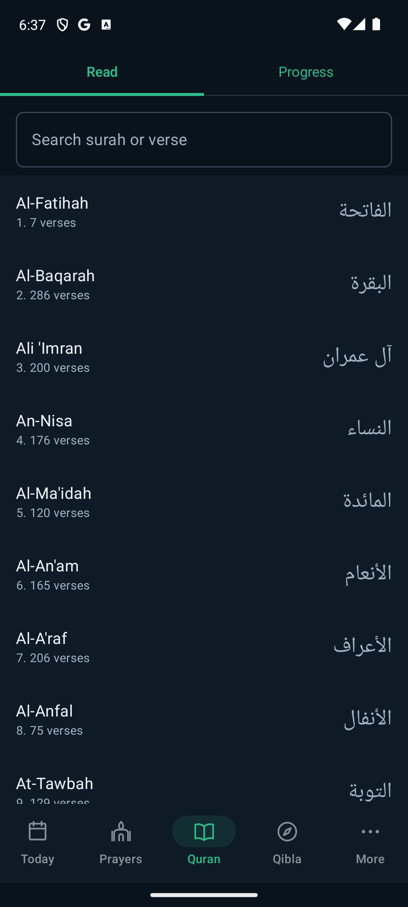
Abas na lista 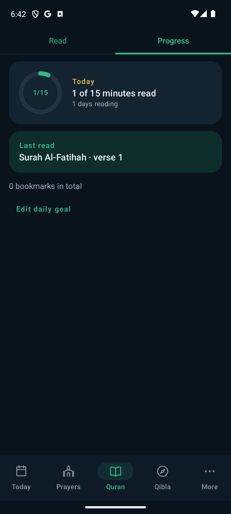
1 de 15 min e sequência
Feito
Leitor com temas e mini-player
Pedido Dar ao leitor a camada de experiência: tema, fonte, modo e áudio persistente.
Entregue
Temas Moderno, Papel e Escuro; quatro tamanhos; Lista ou Página.
Manter a tela ligada, chip de referência e bottom sheet de configurações.
Mini-player com anterior, play/pause, próximo e velocidade de 0,75× a 1,5×, salva.
Papel + Página 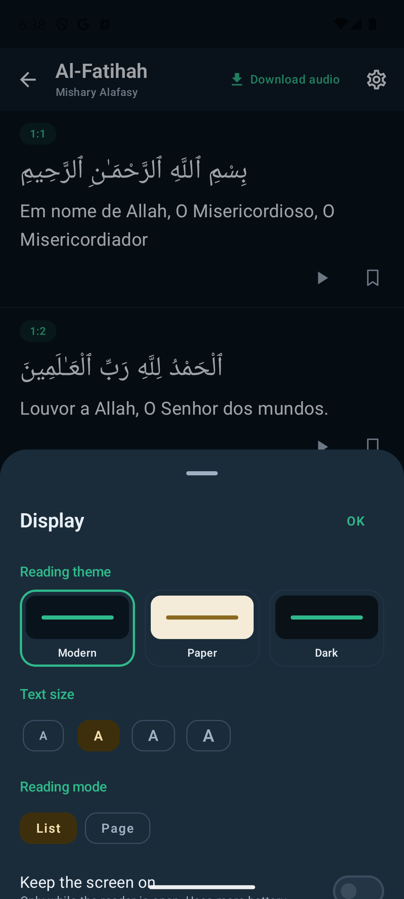
Bottom sheet 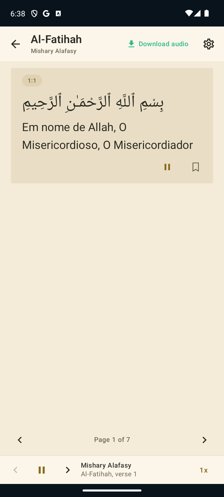
Mini-player com 1×
Feito
Qibla com confiança e calibração
Pedido Melhorar a confiança da bússola sem backend.
Entregue
Precisão do sensor e aviso de interferência magnética.
"De frente para Makkah" com tolerância de 5°.
Ajuda de calibração com figura 8 e cuidados com ímãs e capas metálicas.
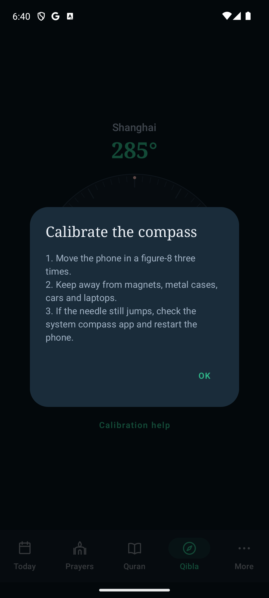
Ajuda de calibração
Feito
Onboarding e polimento visual
Pedido Deixar o onboarding mais claro e o visual consistente.
Entregue
Cartões de permissão para idioma, localização, método e notificações, com o motivo de cada uma.
Cartão de privacidade: sem conta, sem anúncios, sem rastreamento.
Formas de 20 dp no tema, usadas por cartões, sheets e diálogos.
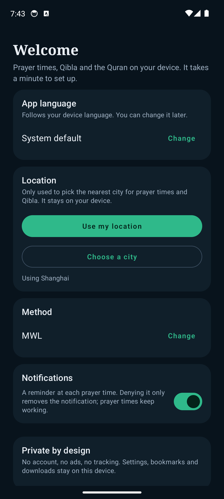
Cartões e privacidade
Feito
Qualidade, instalação e notas de versão
Pedido Rodar todos os E2E, deixar o app levantado e preparar a divulgação.
Entregue
181 testes JVM, 30 instrumentados no Pixel 6, lint e build verdes.
Versão 1.2.0 (versionCode 7), AAB assinado e verificado com jarsigner.
Instalação conferida por hash em emulator-5556.
Notas do Play em pt-BR, en e ar e mensagem de WhatsApp em docs/releases/1.2.0.md.
Regra de publicação registrada no AGENTS.md.
Feito
Emulador dedicado ao Muslim Plus
Pedido O Maco estava com o emulador; abrir outro para o Muslim Plus.
Entregue
AVD MuslimPlusP0 criado, Pixel 6 com Android 14 e 12 GB de dados.
Rodando em emulator-5556, sem tocar no 5554 do Maco.
1.2.0 instalado e aberto na tela Hoje para validação.
Pendências
Publicar o AAB 1.2.0 : falta você definir o track. Teste interno/fechado (beta testers) ou produção?Play Console : status de comerciante e remoção da declaração antiga de localização fina, se ainda aparecer.IndoPak : exige texto e licença de fonte próprios; ficou fora desta versão.P1 : widgets, Khatam/Juz, notas e itens salvos, Duas/Tasbih/99 nomes, calendário, Zakat e Hajj.
Muslim Plus · recap de 31/10/2026 · versão 1.2.0
Prints do próprio app, nenhum asset do Muslim Pro